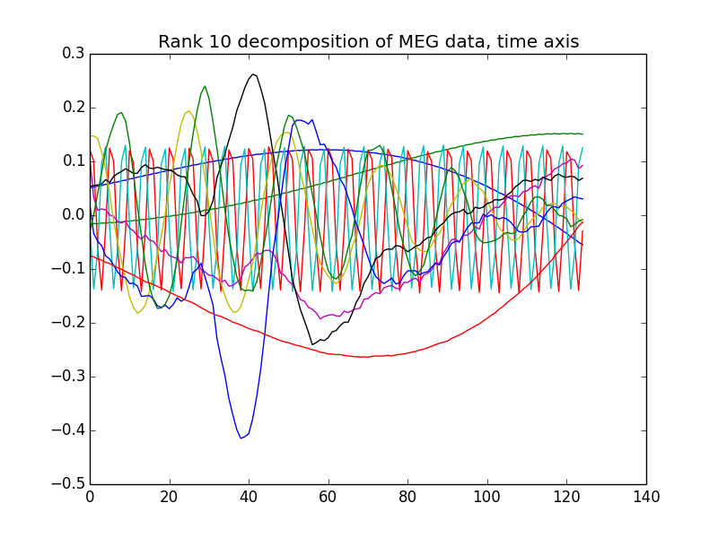

Tensor Decomposition Algorithms
This package features algorithms for tensor decomposition
Algorithms
Tensorlib embeds multidimensional sample data for testing algorithms
and creating examples.
| cp(X[, n_components, tol, max_iter, ...]) |
CANDECOMP/PARAFAC decomposition. |
